New resources
My newest resources appear here first. The list updates automatically.
48 resources

Bank – Arbeitsblatt Lückentext, Hörverstehen & Suchsel | Deutsch / German

Bananen – Arbeitsblatt Lückentext, Hörverstehen & Suchsel | Deutsch / German
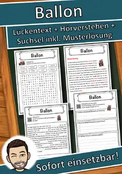
Ballon – Arbeitsblatt Lückentext, Hörverstehen & Suchsel | Deutsch / German
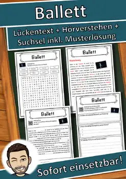
Ballett – Arbeitsblatt Lückentext, Hörverstehen & Suchsel | Deutsch / German
Ballaststoffe – Arbeitsblatt Lückentext & Hörverstehen (Deutsch / German)
Ballade – Arbeitsblatt Lückentext, Hörverstehen & Suchsel | Deutsch / German
Ball – Arbeitsblatt Lückentext, Hörverstehen & Suchsel | Deutsch / German
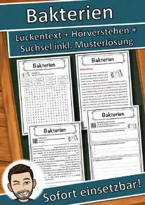
Bakterien – Arbeitsblatt Lückentext, Hörverstehen & Suchsel | Deutsch / German
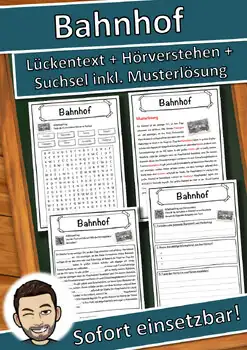
Bahnhof – Arbeitsblatt Lückentext, Hörverstehen & Suchsel | Deutsch / German
Bagger – Arbeitsblatt Lückentext, Hörverstehen & Suchsel | Deutsch / German
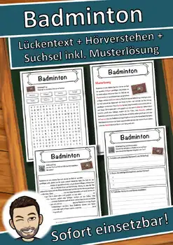
Badminton – Arbeitsblatt Lückentext, Hörverstehen & Suchsel | Deutsch / German
Bademeister – Arbeitsblatt Lückentext, Hörverstehen & Suchsel | Deutsch / German
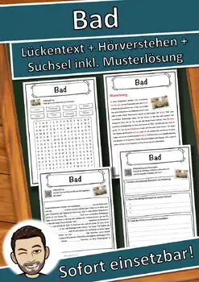
Bad – Arbeitsblatt Lückentext, Hörverstehen & Suchsel | Deutsch / German
Backgammon – Arbeitsblatt Lückentext, Hörverstehen & Suchsel | Deutsch / German
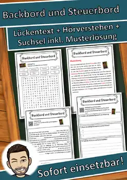
Backbord und Steuerbord – Deutsch / German Arbeitsblatt
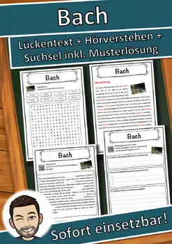
Bach – Arbeitsblatt Lückentext, Hörverstehen & Suchsel | Deutsch / German
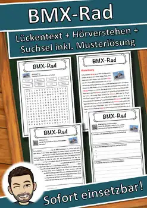
BMX-Rad – Arbeitsblatt Lückentext, Hörverstehen & Suchsel | Deutsch / German
Azteken – Arbeitsblatt Lückentext, Hörverstehen & Suchsel | Deutsch / German
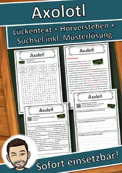
Axolotl – Arbeitsblatt Lückentext, Hörverstehen & Suchsel | Deutsch / German
Außerirdische – Arbeitsblatt Lückentext & Hörverstehen (Deutsch / German)
Autoscooter – Arbeitsblatt Lückentext, Hörverstehen & Suchsel | Deutsch / German
Automechaniker – Arbeitsblatt Lückentext & Hörverstehen (Deutsch / German)
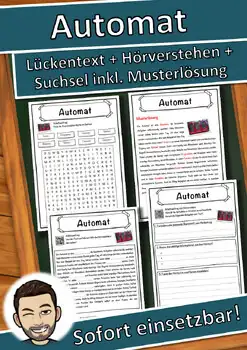
Automat – Arbeitsblatt Lückentext, Hörverstehen & Suchsel | Deutsch / German
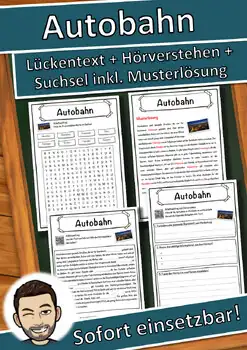
Autobahn – Arbeitsblatt Lückentext, Hörverstehen & Suchsel | Deutsch / German
Aussterben – Arbeitsblatt Lückentext, Hörverstehen & Suchsel | Deutsch / German
Ausstellung – Arbeitsblatt Lückentext, Hörverstehen & Suchsel | Deutsch / German
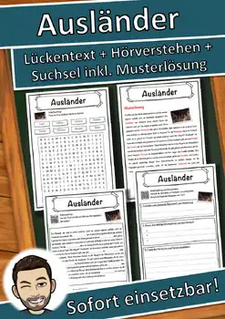
Ausländer – Arbeitsblatt Lückentext, Hörverstehen & Suchsel | Deutsch / German
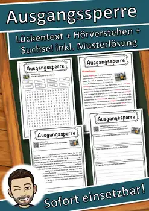
Ausgangssperre – Arbeitsblatt Lückentext & Hörverstehen (Deutsch / German)
Ausbildung – Arbeitsblatt Lückentext, Hörverstehen & Suchsel | Deutsch / German
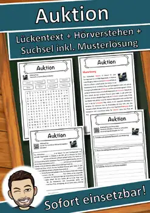
Auktion – Arbeitsblatt Lückentext, Hörverstehen & Suchsel | Deutsch / German

Augustus – Arbeitsblatt Lückentext, Hörverstehen & Suchsel | Deutsch / German
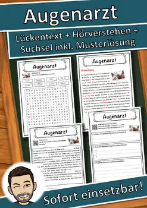
Augenarzt – Arbeitsblatt Lückentext, Hörverstehen & Suchsel | Deutsch / German
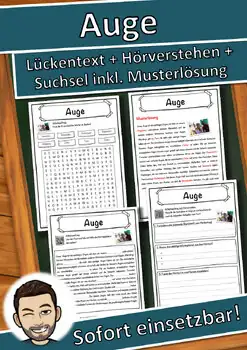
Auge – Arbeitsblatt Lückentext, Hörverstehen & Suchsel | Deutsch / German
Aufklärung – Arbeitsblatt Lückentext, Hörverstehen & Suchsel | Deutsch / German

Auerochse – Arbeitsblatt Lückentext, Hörverstehen & Suchsel | Deutsch / German
Auerhuhn – Arbeitsblatt Lückentext, Hörverstehen & Suchsel | Deutsch / German
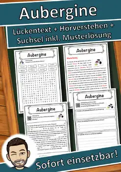
Aubergine – Arbeitsblatt Lückentext, Hörverstehen & Suchsel | Deutsch / German
Atlas – Arbeitsblatt Lückentext, Hörverstehen & Suchsel | Deutsch / German
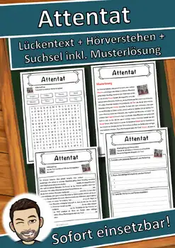
Attentat – Arbeitsblatt Lückentext, Hörverstehen & Suchsel | Deutsch / German
Atomenergie – Arbeitsblatt Lückentext, Hörverstehen & Suchsel | Deutsch / German
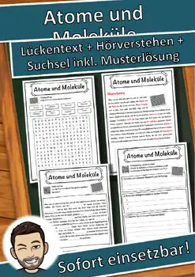
Atome und Moleküle – Arbeitsblatt Lückentext & Hörverstehen (Deutsch / German)
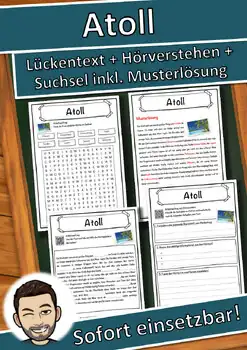
Atoll – Arbeitsblatt Lückentext, Hörverstehen & Suchsel | Deutsch / German
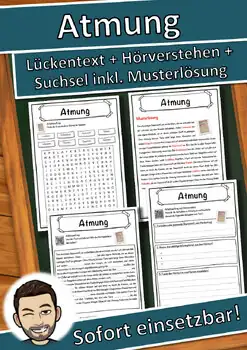
Atmung – Arbeitsblatt Lückentext, Hörverstehen & Suchsel | Deutsch / German
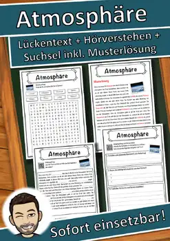
Atmosphäre – Arbeitsblatt Lückentext, Hörverstehen & Suchsel | Deutsch / German

Athene – Arbeitsblatt Lückentext, Hörverstehen & Suchsel | Deutsch / German
Atheismus – Arbeitsblatt Lückentext, Hörverstehen & Suchsel | Deutsch / German
Asyl – Arbeitsblatt Lückentext, Hörverstehen & Suchsel | Deutsch / German
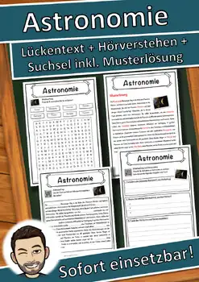
Astronomie – Arbeitsblatt Lückentext, Hörverstehen & Suchsel | Deutsch / German
No resources found – try a different search term or filter.